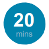

Kedu Ụwà I Chọrọ na 2030?
Ihe omụmụ maka Mmadụ O bula
iji webada Ebum N’obi Mmepe Bụịgba (SDGs)
(Enweghi Ihe mmụta nkuzi Achọrọ!)

Ngwaọrụ
Akwụkwọ nrapara di oghere/akwụkwọ, agba kaadi abụọ di iche iche, ihe nrapara/obere glasi bọlụ/nkume/biskit/ihe ụtọ (ọtụtụ obere ihe aga enye ụmụ akwụkwọ), nnukwu akwụkwọ ahuru anya di oghere (ga ezuru ụmụ akwụkwọ iru oru na obere otù) mkpisi ode akwụkwọ onu ya di nko mmetu aka/mkpisi odide ètere agba (ga ezuru otù o bula iji nwee nhọrọ), SDGs Kaàd nkwa - otu maka nwa akwụkwọ o bula màọbụ otù o bula nke iri na asaa nọ na imē ụlọ klaàsị jupụtara na mmadụ.
Atumanya Ihe Mmụta
Ụmụ akwụkwọ ga:
• Na-aghọta ndabere nke ibe nke SDGs
• Weta njikọ na etiti SDGs na ndụ onwe ha
• Mepụta echiche uche onwe ha nke mba SDGs
• Mkpọkọta ọtụtụ ozi ma kwupụta nkwa onwe iji mee ihe maka SDGs
Iji chọpụta ihe ndị ọzọ banyere SDGs gụọ ihe FAQs - ebe a.
Ụzọ di ukwuu i ga eji na enwekwụ ihe ọmụmụ na SDGs bu site na ikiri
http://worldslargestlesson.globalgoals.org/resources-for-teaching-the-sdgs-in-nigeria/. O na enye ihe di mfe na obere nyocha n’uju nke Ebum n’obi, yanà idepụta
ụfọdụ ederede gbara okwu gburugburu nke esi n’ime ya mepụta ya.
Ekele
Na enye ekele pụrụ iche nye Miroslava Silva Ordaz, mahadum na achị onwe ha nke Queretaro, Mexico na Onye nyocha Ọbịà na Mahadum Delft nke nka na ụzụ klaàsị 6B nke Ụlọ Akwụkwọ Ụwà nke Hague, Netherlands.
Ozi Kachasị Bàa Uru maka Nkuzi
Imeela na ewepụta onwe gị ikuzi na Ihe omụmụ Kachasị ukwuu na Ụwà. N’okpuru i ga ahụ ụfọdụ ozi kachasị bàa uru
maka nkuzi:
• Na ekwu okwu nwayọọ ma doo anya
• Gbaa mbò ka idebe “okwu nkuzi” gị (mgbe i na ekwuru ụmụ akwụkwọ okwu ozugbo ha na ege ntị) na nke kacha
nkeji iri n’oge eji agunye ụmụ akwụkwọ
• Tọ mbò na ọganihu - ọmụmatụ “o masiri m etu isi agba mbò iza ajụjụ a, o masiri m na mbò niile itinyèrè iji ruo oru
na arụmarụ a taa.”
• Anyị achọpụtala na ejiri ntule yiri nke ihe egwuregwu jigsaw ga enyere ụmụ akwụkwọ aka iji ghọta ndabere nke ibe
na SDGs - ọmụmatụ
“Otu n’ime nke o bula di mkpa (dikà Ebum n’obi o bula) maka na ha na emekọ onu ma ha agaghị ezu oke na
enweghi otu n’ime nke o bula.” (Lee Ozi mgbakwunye nke mbu)
• Chee banyere ihe kpatara iji akuzi ihe omụmụ a taa na ihe mere ijiri kweta na SDGs di mkpa na okwesiri ka ekekoritara
ya ndị na eto eto. Akụkọ onwe onye bu nke na anọrọrọ anyị karịsịa ya mere kwàdebe obere akụkọ màọbụ ihe mere gị
tupu mgbe ịga ekekoritara ya ụmụ akwụkwọ gị.
• Chịa ọchị ma nwere onwe gị obi ụtọ!
• Oru gị bu ime ihe ọdị mfe. Mee ka ihe omụmụ buru ihe mkparịta ụkà na ilekwasi anya na nwa akwụkwọ dikà i nwere ike.
Nkwadebe Tupu Ihe Omụmụ
• Mee ka imatazuo nkwurịtaokwū maàpụ nke Ihe Omụmụ Kachasị ukwuu na Ụwà - dikà i ga achọ itinye ihe omụmụ gị na ya.
• Gị na onye nkuzi klaàsị nọkọọ nleruanyā tupu mgbe ahụ na iwu nke klaàsị na atụmanyà mkparama agwa.
Ajụjụ echepụtàrà iju: Kedu ka onye nkuzi ga esi atụrụ ụmụ akwụkwọ aka ka ha dere juu mgbe o
na ekwu okwu? Enwere usoro onyinye ihe nrite nke klaàsị?
• Biputachaa Ozi enyemaka SDGs (Ozi mgbakwunye nke ano) -ga ezu ka otù o bula nwee otu.
• Na-eji mpempe akwụkwọ, see nnukwu òkìrìkiri “odidi mba”. Gbaa mbò hu na “mba” ahụ nyefere mpempe akwụkwọ ga
ezu onu maka otù o bula n’ime klaàsị ka ha nwee otu. Iji nwetakwùo ntụziaka maka ụmụ akwụkwọ, i nwere ike ise ụzọ
na agba na oke mba na/màọbụ dee aha mbara ezi nke mba dikà oke osimiri.
• Mara nke a: N’okpuru bu nchepụta ụzọ esi eme ihe omume maka omụmụ gị. Na Ozi mgbakwunye nke abuo i ga
ahụ ihe nchepụta omume ihe ndị ọzọ di iche iche màọbụ i nwere ike ịchọ imepụta ihe ọhụrụ ma mee nke onwe gị!
Nzọụkwụ nke mbu: Kọwaa Onwe Gị
Debe nke a obere - dikà ọga enwe oge mgbe emesiri na ihe omụmụ iji kowakwuo na ihe a.
Gwa ụmụ akwụkwọ aha gị, ebe i si na ụlọ oru ebe i na arụ oru (ma o buru na nke ahụ di mkpa). Kpọọ ụmụ akwụkwọ ka ha
kowaa onwe ha. Nke a ga enwerekwụ oge karịsịa na imē ụlọ klaàsị mmadụ jupụtara (mepụta ụzọ na agaghị egbu oge na
okwu a).
Kọwaa na i nọ ebe a ikwu banyere Ebumobi Ụwà niile màọbụ Ebum N’obi Mmepe Bụịgba (SDGs) (ihe ndị a bu otu ihe).
Gwa ụmụ akwụkwọ ka ha welie aka ha elu ma o buru na ha anụ tula okwu ndị a mbu. Họrọ obere ụmụ akwụkwọ ka
ha kekorita ihe mmụta ha banyere Ebum n’obi na ndị klaàsị ha niile. O buru na o dighị onye o bula nụrụ okwu ahụ
“Ebum N’obi Mmepe Bụịgba” mbu, mee ka obi sie ndị klaàsị ike na ha niile ga ama ihe okwu ahụ pụtara site na njedebe
nke ihe omụmụ
Nzọụkwụ nke abụọ: Iwebata Ihe Omume
Emepụ̀tàrà ihe omume ndị a iji nweta “ụzọ mbanye? na Ebum n’obi (ma otu Ebum n’obi màọbụ
isiokwu si na Ebum n’obi) ụmụ akwụkwọ nwere ike iko akụkọ ya kama iwetara ha ihe niile di na
Ebum n’obi na otu oge. Lee Ozi mgbakwunye nke abụọ maka arọ ọzọ ime ihe omụmụ a.
Kèsaa na gburugburu ime ụlọ nọmba ekewara ekewa ha otu nke obere glasi bọlụ/nkume/mpe mpe akwụkwọ/
biskit/ihe nrapara. Ụfọdụ ụmụ akwụkwọ kwesiri inwe ọtụtụ, ụfọdụ naanị ntakiri na ụfọdụ agaghị enwe ma ọlị.
Dobe ọtụtụ maka onwe gị Juo ajụjụ ahụ: “Ihe a o di mma?” Gbaa ụmụ akwụkwọ ume iji kwụrịta nke a dikà klaàsị.
Juo ụmụ akwụkwọ ka ha kwuo etu obi ha di banyere ihe ole ha nwere. Iji kpalite ọchịchọ ịmata ihe na mmetụta obi
na ikpa oke n’etiti ụmụ akwụkwọ a, juo ụmụ akwụkwọ ihe kpatara ijiri kee ihe enyemaka na ụzọ di otu a (họrọ usoro
ọzọ eji ama ikpe nke enweghi usoro ma o buru na nke a adịghị mma).
Juo ụmụ akwụkwọ ma o buru na ha chere na nke a di mma ma kèsaa ihe na ụzọ esi
aga n’ihu. Kedu ihe nwere ike ibu ụzọ kachasị mma iji kèsaa ihe ahụ?
Webata echiche nke odiiche di na ọnọdụ ọhà mmadụ. Juo klaàsị ma o buru na ha nwere echiche
o bula ihe nke a nwere ike ipụta?
Gwa ụmụ akwụkwọ na emepụtàrà SDGs iji belata odiiche na akụkụ niile nke ndụ na imepụta ụwa di mma maka
onye o bula na ebe ana e nweghi onye ahapụrù n’azụ. Nke a dịkwa mkpa na Ebum n’obi dabere na ihu igwe niile
na ụwa dikà mmetụta mgbanwe ebe obibi na ihu igwe kachasị emetụta ndị na e nweghi ike Ichēkwa onwe ha
na ya nke ukwuu. Juo ụmụ akwụkwọ ka ga cheta etu o si di n’obi enweta oke ihe kachasị obere karịa ndị ọzọ,
na echetara onwe ha nke echiche ahụ na ihe omụmụ niile.
Odiiche di na ọnọdụ ọhà mmadụ: “ọnọdụ ebe ndị mmadụ enweghi nhata maka na ụfọdụ otù
nwèkwụrụ ohere, ike, ego, were gawazie karịa ndị ọzọ”. (ebe osi bịa: MacMillan dictionary)
Nzọụkwụ nke ato: Ewèbata SDGs
Kọwara ụmụ akwụkwọ na ha ga ekiri katuunu ugbu a iji mụtakwuo banyere SDGs. Na-adabere na ogo ihe
mmụta ha, ihe a kwesiri i bu http://worldslargestlesson.globalgoals.org/resources-for-teaching-the-sdgs-in-nigeria/
Ihe nwebata na Ebum n’obi màọbụ nke abụọ ọmụmatụ nke ime ihe di iche iche ana eme na gburugburu ụwa
Mgbe ana ekiri katuunu juo ụmụ akwụkwọ ka ha detuo okwu o bula ha na aghọtaghị màọbụ ajụjụ ha nwere banyere
Ebum n’obi – gị na ha nwere ike ile anya nke a na njedebe ihe nkiri.
O buru na nke a bu izizi gị ịmụta banyere SDGs, ụmụ akwụkwọ nwere ike inwe ọtụtụ ajụjụ banyere nke a i nwere ike
imaghi azịza ya (karịsịa ihe kpatara o ji di ha mkpa itinye aka). Gbaa mbò ka i zaa ajụjụ ndị a dikà etu kachasị mma
i nwere ike ma o buru na imaghi azịza ahụ zi ụmụ akwụkwọ ụzọ ebe weebusaiti SDGs iji chọpụta ihe ndị ọzọ màọbụ
nnwàle ụmụ akwụkwọ ịchọpụta azịza ha mgbe emesiri nnokọ!
Gosi ụmụ akwụkwọ foto màọbụ vidīò nke Mgbàkọ Mba di n’otu na egosi ebe mba niile (gụnyere Nigeria) ndị isi ha nochiri
anya ha ma binye aka iji họrọ ma kpebie eji SDGs dikà atụmatụ ime ihe.
Nzọụkwụ nke ano: Njikọ SDGs na Ndụ N’ezie
Iji gaa n’ihu ijikọ SDGs na ihe ọmụmụ onwe ha, juo ụmụ akwụkwọ
Afo ole ka ha ga adị na 2030? Gịnị mere afo 2030 jiri di mkpa?
N’oge ahụ ha nwere ike idi afo iru oru. Gwa ụmụ akwụkwọ ka ha chee echichi (otu onye) mmadụ abụọ (gwa onye na esote
ha okwu) ma kekorita (gwa ndị klaàsị niile okwu) banyere ihe ha nwere ike ina eme na 2030, udị oru ha nwere ike inwe,
ihe ha chọrọ igu màọbụ etu ha ga esi eji oge ha?
Kedu etu i siri chee na anyị ga esi iko ndụ ọdịnihu gị na SDGs? - Gwa ụmụ akwụkwọ ka ha chee echiche gbasara akụkụ
oru ha ga enweta nwere ike ijikọ na SDGs. Ọmụmatụ o buru na ụmụ akwụkwọ chọrọ ibu onye nkuzi nke ahụ ga enye aka
imezu Ebum n’obi nke ano.
Nzọụkwụ nke Ise: Isi Ihe Omume
Mara nke a: Maka ịmā atụ nke Ihe omume Mba SDGs lee Ozi mgbakwunye nke ato. Mgbe ụmụ
akwụkwọ na emezu ihe omume a, were ohere a gaa ije na gbugburu klaàsị ahụ. Ụmụ akwụkwọ ga
achọ imatakwu ihe banyere gị yanà njikọ onwe gị na Ebum n’obi. Kekorita ha ka e siri hu ma juo ha ka
ha gwatụkwuo gị obere ihe banyere ha na mmasị ha na SDGs. Ihe a bu ohere di ukwuu iji juo echiche
na Ebum n’obi na ma ụmụ akwụkwọ echere na ha mere màọbụ na ejikoghi na kwa ndụ ha.
Kọwara ụmụ akwụkwọ na ha ga aga imezu ihe otú mmụta ugbu a. Kewa klaàsị n’otú nke ụmụ akwụkwọ
ato ruo ise (dabere na nha nke klaàsị) ma kọwaa na isi oru taa bu imepụta mba SDGs - ebe otù o
bula ga ese echiche uche nke onwe ha nke ihe ga amasi mba na 2030 ma oburu ma emezụrụ Ebum
n’obi. Gwa ndị klaàsị ka ha kwụrịta okwu n’otú ha kedu ụdị ngwaọrụ na ụlọ mba nwere ike ịchọ iji leruo
ọnụọgụgụ ndị mmadụ bị na ya anya, gburugburu ebe obibi na akụ okike? Ọmụmatụ ụlọ akwụkwọ, ụlọ
ọgwụ, mmiri ndebe, usoro nhazi ihe mkpọfụ, ụzọ nchebe. Nwere ụfọdụ arọ si n’otú di iche iche.
Gosi ụmụ akwụkwọ mpe mpe akwụkwọ i sere mbu. Kọwaa n’otú o bula ga enwe otu nkewa akụkụ iji
see mba maàpụ SDGs ha na - mgbe ahụ aga ejikọ nkewa akụkụ a onu na njedebe nnokọ iji hu mba
zuru ezu dikà nke dum - lee ihe eserese na Ozi mgbakwunye nke ato maka ịmā atụ nke a .
Gbaa mbò n’otú o bula nwere akara nru akà na maàpụ (Ozi mgbakwunye nke ano) na Nkọwa Ebum
n’obi Otu Ahịrịokwu (Ozi mgbakwunye nke ise) màọbụ gosi ihe a na boọdụ dikà “ndepùta nke ihe achọrọ”
ya mere ụmụ akwụkwọ ga agbalị imepụta mba nwere ngwaọrụ na ụlọ ga emezu Ebum n’obi o bula.
O buru na ụmụ akwụkwọ chọrọ enyemaka ọzọ - juo nchepụta ajụjụ ncheta na Ozi mgbakwunye nke isii.
Nzọụkwụ nke isii: Iche Echiche di Omimi
Mgbe otù were ụfọdụ oge na iru oru na mmepụta ha, kpoghachite klaàsị azụ iji juo ụfọdụ ajụjụ banyere Ebum
n’obi o bula ụmụ akwụkwọ na echetaghị. Maka ọmụmatụ ụmụ akwụkwọ na echekari echiche mbu banyere uru
nke mmepụta otu mba ịmā atụ mmiri ndebe na ụlọ akwụkwọ Mana nwere ohere a juo ajụjụ ga akwalite echiche
omimi si na ụmụ akwụkwọ na nsogbu gbara gburugburu igùnyè ụdị mmadụ niile na obodo - ịmā atụ Kedu ihe nọ na
maàpụ SDGs ma mba ha na akwalite ahụikē na ọdị mma? Olee etu ha ga esi hu na ha na emepụta otu mba ebe
agụnyere onye o bula? Olee etu ha ga esi hu na echekwara ihe okike?
Na ihe omume niile, chetara ụmụ akwụkwọ oge olee ha nwere fodurunu na etu o ga adị na njedebe ihe omụmụ a
i na atụ anya na aga emecha ihe mmewe nkwa. Tọ nrukọ oru onu di mma, ịgbā mbo,nkwurita n’etiti otù na ọtụtụ
nkwurịtaokwū banyere Ebum n’obi.
Ihe Omume Mgbakwunye Oge Ọzọ: O buru na ụfọdụ otù mechara ọsisọ, mere ha oru ịchọpụta ụdị Ebum n’obi
ihe eserese na maàpụ ha na akòrò kpomkwem. Ọmụmatụ o buru na ụmụ akwụkwọ sere bọọdụ esi enweta ike
anyanwụ ha kwesiri ide Ebum n’obi asaa nke adịghị onu na Ike Anyanwụ di Ọcha na akụkụ ha.
Nzọụkwụ nke asaa: Mmechi nke Ihe Omụmụ
Kpọọ ụmụ akwụkwọ ka ha bịa jìkọ mpe mpe akwụkwọ mba ha onu ka ozuo ezu. Nye oge ka ụmụ akwụkwọ
lee maàpụ mba SDGs niile ha-ahụ anya.
Gwa otu òtù ka ha gosi klaàsị akwụkwọ ha ma gwa ndị ọzọ ka ha mee nzighàchi nye ihe ngosi ma mee njikọ
n’etiti nke a na nke akụkụ mba ha. Kedu ihe oyiyi na odiichi nọ na etiti nkọwa otú o bula nke mba SDGs?
Nzọụkwụ nke asato: Na-atụgharị Mmụta na Ime Ihe
Ugbu a emechara “mba” SDGs a na ejikọta akụkụ di iche o bula, juo ụmụ akwụkwọ ka ha chebara echichi na ihe
omume ma juo etu maàpụ ha mepụtàrà nwere ike ịghọ eziokwu na mba ha bị n’ezie. Kedu etu anyị ga esi emezu
ihe a ebe a? Kedu ihe mmadụ nwere ike ime màọbụ gbanwee iji hu na omere?
Jikọọ ajụjụ ndị a na nkwa onwe ụmụ akwụkwọ maka SDGs (lee Ozi mgbakwunye nke asaa) na etu onye o bula jiri
nwee ikike iji mee ihe di iche maka Ebum n’obi na enwere ọtụtụ ụzọ di iche iche iji eme ihe a.
Nye ụmụ akwụkwọ oge iji chebara echiche banyere nkwa onwe ha - kedu ihe ha ga eme iji mee ka mgbanwe ndị
a pụta ehie?
Kọwaa etu esi chọọ ka ụmụ akwụkwọ che echiche banyere nzọụkwụ mbu ha ga eme iji mezuo nkwa a màọbụ ihe aga
eme na ndị ha ga ekwuritara ya. Ọmụmatụ ezinụlọ/enyi/ụlọ akwụkwọ/ndị isi obodo
Ọmụmatụ Nkwa onwe maka Ebum n’obi iri na ano:
Agaghị m ekwe eji botụrụ mmiri plastiki. Nzọụkwụ m mbu iji mezuo ihe a bu site na izu buturu mmiri aga ejiri ọzọ.
Nkwa onwe maka Ebum n’obi iri na abụọ:
A ga m agbalị ebelata nri mkpọfụ m. Nzọụkwụ m mbu iji mezuo ihe a bu ikwuru ndị ezinụlọ m okwu banyere atụmatụ nri.
Nkwa nke onwe m maka Ebum n'obi nke ise:
A ga m ahụ na echekwara ikike ụmụ agbọghọbịa mgbe niile.
Kpọọ ụmụ akwụkwọ ndị ruchara oru ha ka ha tinye ihe omụmụ gị na mmekọrịta maàpụ
Ihe omụmụ Kachasị Ukwuu n’ Ụwà iji gosi ndị klaàsị ihe omụmụ ole na eme na gburugburu ụwa!
Kele ụmụ akwụkwọ maka oge ha ma kekoritara ha ihe imutara taa. Gbaa ụmụ akwụkwọ ume ka ha pụọ ezi ma gwa onye
o bula banyere SDGs - na ezinụlọ ha, ndị enyi màọbụ ụmụ akwụkwọ ibe ha. Kekoritara ha aha mgbasa ozi ọhà twitter:
@TheWorldsLesson,
Facebook: @TheWorldsLargestLesson, Instagram: @TheWorldsLesson
Nzọụkwụ nke itoolu: Kekorita Ihe Omụmụ Gị!
Mara nke a: Gị na onye nkuzi/onye nhazi ụlọ akwụkwụ ga ekweta na ise foto ụmụ akwụkwọ di n’usoro
Iwu Nchedo Umuaka.
Juo ka ise foto kaàdị nkwa ụmụ akwụkwọ ma o buru na okwetara na foto nke ụmụ akwụkwọ na mba SDGs ha.
Ọga amasi anyị inu banyere ihe igabigara na ikuzi na Ihe Omụmụ Kachasị Ukwuu n’Uwa iji ziga foto ihe omụmụ
gị na worldslessonnigeria@outlook.com màọbụ zitere anyị Twitter @WorldsLessonNG Facebook: @WorldsLessonNG
Instagram: @WorldsLessonNG
Ozi mgbakwunye nke mbu: Akara nrụtụaka SDGs dikà Jigsaw Puzzle

Ozi mgbakwunye nke abuo: Ihe Egwuregwu Ọzọ maka Nzọụkwụ abụọ
Njikọ SDGs na Ndụ N’ezie
Ebe mbido njem” ọzọ maka ihe omụmụ nwere ike ibu elebara anya na Okike Nhata. O buru na ịga agwa
ụmụ akwụkwọ nwoke niile na ha ga anọrọ odu na ala nkịtị, ebe ụmụ nwanyị niile ga anọrọ odu na oche.
Màọbụ kọwaa na mgbe ụmụ akwụkwọ nwoke niile nwere echiche ikekorita na klaàsị, na ha ga ebu ụzọ
gwa ya ụmụ nwanyị klaàsị ibe ha ndị ga ekwuchitere ha okwu. Echiche ndị ọzọ gụnyere naanị inwere ajụjụ/
echiche si na ụmụ akwụkwọ nwoke ma lee ma ndị klaàsị omatara ihe na emenu. Kedu etu ihe a siri metụta
ụmụ akwụkwọ? Ihe a o di mma? Kpọọ ụmụ akwụkwọ ka ha tuo arọ etu i gaara esi mee ihe di iche?
Nke a ga emepe nkwurịtaokwū na klaàsị banyere Ebum n’obi nke ise na etu osi eme ihe iji mezuo okike nhata
ma nye ụmụ nwanyị na ụmụ agbọghọbịa ike.
Ozi mgbakwunye nke ato: Ọmụmatụ nke Isi Ihe Omume
Ebe a bu ihe ịmā atụ si na ihe omụmụ mbu. Otù ụmụ akwụkwọ mepụtàrà akụkụ nke ha nke mba SDGs ma mgbe ahụ biakota onu dikà klaàsị iji kpaa maka mba zuru ezu.

Ozi mgbakwunye nke ano: Akara nrụtụaka SDGs
Ozi mgbakwunye nke ise: Otu Ahịrịokwu na Nkọwa Ebum n’obi Ụwà Niile
A lè lo ìwọ̀ nyí láti ràn àwọn akẹ́kọ̀ ọ́ lọ́wọ́ nínú ìmọ wọn lórí ohun tí ìlépa
Ìdàgbàsókè Tó Dúró Ṣinṣin kọ̀ ọ̀ kan n gbìyànjú láti ṣe.
Ebum n’obi nke mbu- Kwụsị ogbenye na ụdị ya niile na ebe o bula.
Ebum n’obi nke abụọ - Kwụsị agụrụ ma hu na onye o bula nwere ohere inata nri di mma na eduzi ahụ.
Ebum n’obi nke ato - Gbaa mbò hu maka ibi ndụ di mma ma kwalite ọdị mma mmadụ niile na afo niile
Ebum n’obi nke ano - Hu maka agumakwukwo na agunye ụdị mmadụ niile di mma maka mmadụ niile
Ebum n’obi ise - Mezuo okike nhata ma nye ụmụ nwanyị na agbọghọbịa ikike
Ebum n’obi nke isii - Gbaa mbò hu na onye o bula nwere ohere inweta mmiri di mma na ụchā
Ebum n’obi nke asaa - Gbaa mbò hu na onye o bula nwere ohere inweta inye oku di mma na ọcha
Ebum n’obi nke asato - Kwalite ọganihu ga anọgide ma gunye ụdị mmadụ niile ka mmadụ niile nwee ike inwe
atumanya ezigbo oru
Ebum n’obi nke itoolu - Ruo ụlọ siri ike na agaghị ada ma hu na ihe a agaghị emeru gburugburu ebe obibi
màọbụ mmadụ ahụ, ma nyere ndị ụlọ oru aka iji mewa ma mepụta nka na ụzụ ọhụrụ na nkepụta ọhụrụ
Ebum n’obi nke iri - Belata odiiche di n’ime na etiti mba
Ebum n’obi nke iri na otu - Mee ka obodo mepere emepe na ebe obibi ndị mmadụ gụnyere ụdị mmadụ niile,
nọ na nchekwa ,siri ike na anọgide
Ebum n’obi nke iri na abụọ - Hu maka nnogide oriri ma nye aka ikwusi mkpọfụ nri
Ebum n’obi nke iri na ato - Mee ihe ngwa ngwa iji kwụsị mgbanwe ihu éluigwe na ihe mmetụta ya
Ebum n’obi nke iri na ano - gbochie ma chekwa oke osimiri na ndụ mmiri
Ebum n’obi nke iri na ise - Chekwa, weghachite ma kwalite odidi na ụmụ anụmanụ bị n’ime ya
Ebum n’obi nke iri na isii - Kwalite udo na ọhà mmadụ gụnyere ụdị mmadụ niile maka ọganihu na anọgide, nweta
ohere na ikpe ziri ezi maka mmadụ niile ma ruo mahadum na arụ oru, mara oru ya na agunye ụdị mmadụ niile na ogo niile
Ebum n’obi nke iri na asaa - mepụta nruko oru ọhụrụ na gburugburu ụwa maka SDGs
Ozi mgbakwunye nke isii: Ajụjụ Ncheta
Nwere ajụjụ a dikà ihe ntụziaka iji mee ka ụmụ akwụkwọ chee echiche ncheta ma kpaa banyere SDGs.
1. Enwere Ebum n’obi o bula ichere di ezigbo mkpa nye gị?
2. Enwere ike ekewa SDGs na akụkụ di iche iche - i nwere ike irupụta ihe ihe a nwere ike ibu -ịmā atụ gburugburu ebe
obibi/mmadụ/ibi na obodo mepere emepe - ihe a nwere ike inyere ụmụ akwụkwọ aka iji chọpụta otù ebum n’obì ha buru
n’uche karịsịa
3. Enwere Ebum n’obi o bula ichere di ezigbo mkpa nye ndị na eto eto? Enwere ebum n’obi o bula ana echefu?
4. Che echiche banyere ebe ibi. Enwere ike enwere ụfọdụ atụmatụ pụrụ iche na obodo gị, enwere ike enwere akụkụ ọzọ
obodo ahụ ga eme ofụma - ịmā atụ nhazi ihe mkpọfụ maka mmegharị- kedu njikọ na SDGs di ebe a?
5. Enwere Ebum n’obi o bula i chere ga adị mfe imezu karịa ndị ọzọ?
6. Enwere Ebum n’obi o bula i chere mba gị màọbụ obodo gị di mma karịsịa màọbụ nwere ike ime ofụma?
7. Enwere Ebum n’obi o bula i chere na adịghị gị/mba gị mkpa? Ebum n’obi o bula di mkpa nye mba niile na ajụjụ a ga
ebute ikwu okwu banyere etu SDGs jiri buru maka onye o bula ebe o bula.
8. Enwere Ebum n’obi o bula ụlọ akwụkwọ gị na arụ oru emezu na amaghị ya? Ịmā atụ Ebum n’obi nke iri na abụọ site na
igùnyè akpa mkpọfụ ahihia aga emegharị na ụlọ akwụkwọ.
9. Enwere SDGs o bula i na arụ oru ya n’ulo na amaghị ya? - Ajụjụ a ga enyere ụmụ akwụkwọ aka hu na ha nwere ike inye
aka na Ebum n’obi ịmā atụ site na ịgbā mbò hu na i na eri nri di mma na nri na edozi ahụ na ụlọ - Ebum n’obi nke ato
10. O buru na anyị emezu Ebum n’obi otu - Kedu mmetụta o ga enwe na ndị SDGs ọzọ? - Ikwu okwu iji nyere ụmụ
akwụkwọ aka ghọta na SDGs niile jikọrọ onwe ha onu dikà ihe mpe mpe nke ihe egwuregwu.
11. Inwere ike iche etu ihe I mụtara na ụlọ akwụkwọ jiri jikọta na Ebum n’obi?
Ozi mgbakwunye nke asaa: Nkwa Onwe maka Ime Ihe
Jiri nke a maka ụmụ akwụkwọ ide nkwa onwe ha maka inyere aka emezu SDGs